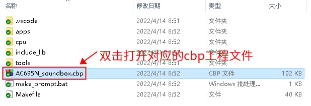

2.1. 使用 Code::Blocks 进行编译
默认情况下，SDK 发布都是以 Code::Blocks 工程（即扩展名为 .cbp 的文件）的形式发布。
2.1.1. 使用 Code::Blocks 编译 SDK 的步骤
使用 Code::Blocks 进行编译分为两步。下面以 AC695N 的 SDK 为例说明：
2.1.1.1. 打开 SDK 目录下的 cbp 工程
如下图所示：

2.1.1.2. 使用强制下载工具连接开发板（样机）与PC
强制升级工具的USB母头与电脑连接，USB公头连接样机或开发板。（注意不要接反，参考下图）

详细参考：升级与下载说明
2.1.1.3. 点击【编译】或者【重新编译】按钮
如下图所示：

Important
请勿点击【运行】或者【调试】。因为这两个按钮会导致 Code::Blocks 尝试在当前 Windows 机器上运行小机的固件程序。由于小机的固件程序并不是 Windows 上的可执行文件。这会导致报错。
点击【编译】按钮，当 Code::Blocks 编译成功后，将会调用下载目录中的 download.bat 后处理脚本，将程序下载到开发板（样机）中。我们只需要点击【编译】按钮即可。
2.1.2. 常见问题
Note
如果使用 Code::Blocks 过程中遇到问题，可以参考 常见报错，这里列举了常见的问题以及处理方式。
如果编译报错，参考：常见问题以及处理方法
如果下载程序报错，参考：为什么无法下载程序